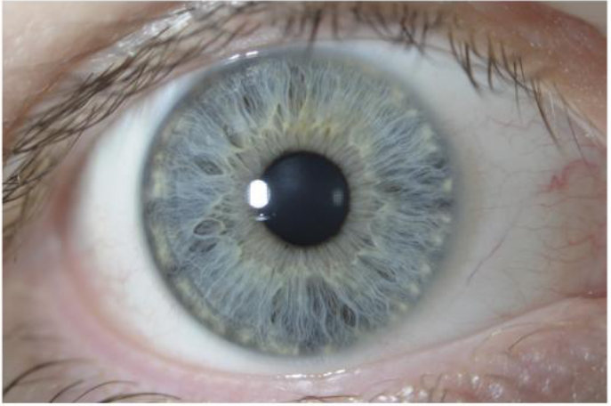
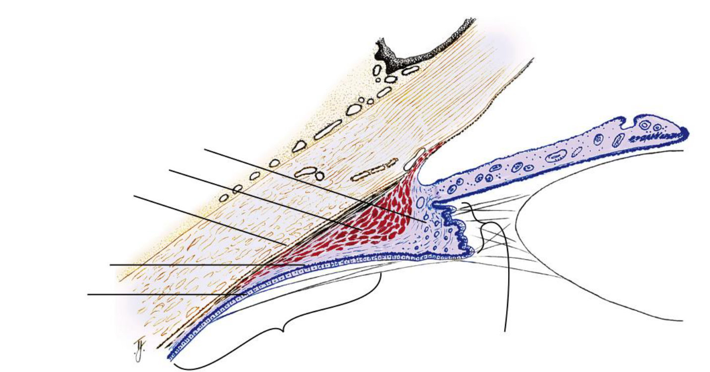
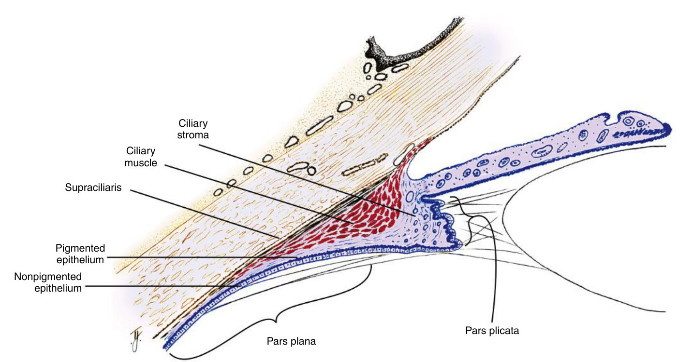
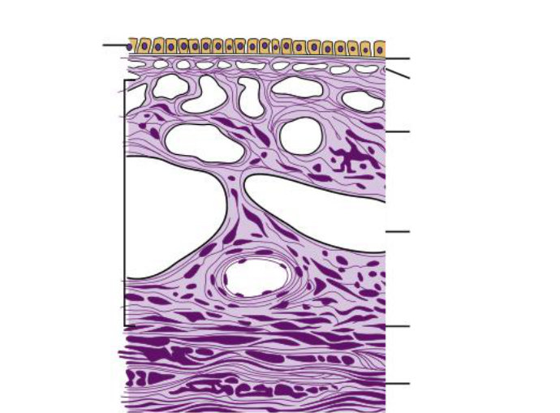
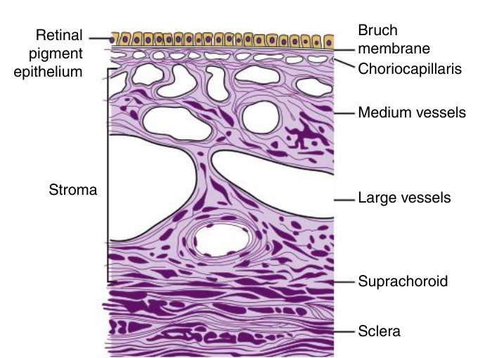

Two barriers, two seals
The iris and the ciliary body both keep protein out of the aqueous — but they do it in completely different places. That contrast is the chapter.
Explain the blood–aqueous barrier twice — once for the iris, once for the ciliary body — naming the vessel type and the sealing structure each time. Then say what uveitis does to it and what you see at the slit lamp.
Eight objectives: identify and describe the landmarks on the iris · name the iris and ciliary blood vessels · discuss how those vessels and the ciliary epithelium contribute to the blood aqueous barrier and uveitis · the functions and innervation of the iris and ciliary body muscles · the two main parts of the ciliary body · the vascular patterns of the choroid and choriocapillaris · the location of the vortex veins · how Bruch's membrane is involved in AMD. Plus one from Circulation: the anastomosis that forms the major circle of the iris.
Exam guidelines · p. 2, 5
1. Iris landmarks, pupil outward
| Landmark | Where | Why it matters |
|---|---|---|
| Pupillary ruff | at the pupil margin | the posterior pigmented epithelium curling onto the front — a dark serrated ring |
| Pupillary zone | pupil → collarette | holds the sphincter |
| Collarette | ~1.5 mm from the pupil margin | jagged raised ridge; the thickest part of the iris; divides the two zones |
| Fuchs crypts | either side of the collarette | let aqueous move in and out of the stroma as the iris changes volume |
| Ciliary zone | collarette → root | carries the circular contraction folds |
| Iris root | joins the ciliary body, 360° | the thinnest part — so it is what tears in blunt trauma |

On this photograph find, in order: the collarette, the pupillary and ciliary zones, the trabeculae (white radial strands) and the crypts (dark oval holes).
A blow tears the thin root from the ciliary body. Torn branches of the major circle bleed into the anterior chamber, where the blood settles inferiorly: hyphema. Nerve damage can paralyse a sector of the iris muscles. Your note: "so we have to look at the edges of the iris" after trauma. Handout 5 · p. 1 · TB 5 · p. 62, 75
2. The two muscles
| Muscle | Built from | Nerve | Action |
|---|---|---|---|
| Sphincter | smooth muscle, a circular band 0.75–1 mm wide in the pupillary-zone stroma | parasympathetic | miosis |
| Dilator | radial processes of the anterior iris epithelium, 3–5 layers, root to mid-sphincter | sympathetic | mydriasis |
| Ciliary muscle | smooth muscle in three fibre directions: longitudinal, radial, circular | parasympathetic | accommodation |
On the sympathetic effect on the ciliary muscle the sources differ: the handout says "no clinically significant effect", the textbook says it "likely has an inhibitory effect". Lead with the handout.
Handout 5 · p. 3, 6 · TB 5 · p. 64, 70–72
3. The vessels, and how the major circle forms
Note where it lies: in the ciliary body stroma near the iris root, in front of the circular muscle — not in the iris, despite the name. From it, radial vessels run into the iris; behind the collarette sits the incomplete minor circle, an embryological remnant.
TB 5 · p. 63, 70, 79 · TB 12 · p. 198
4. The barrier — the heart of the chapter
Ciliary body: the capillaries are fenestrated, so protein leaks straight out into the stroma. The seal has to lie further in — it is the zonula occludens of the inner, nonpigmented epithelium, which forces molecules to pass through the cells rather than between them.
Iris: the capillaries are not fenestrated; their endothelium is itself sealed by zonula occludens. The seal is the vessel wall.
Result: plasma holds about 200 times the protein of aqueous. Low protein means little light scatter — which is the whole point.
TB 5 · p. 71, 74 · Handout 5 · p. 6 · TB 1 · p. 8
Inflammation breaks those tight junctions, so white cells and protein enter the aqueous: cells and flare. A conical slit-lamp beam is normally invisible in aqueous — "optically empty". Particles scatter it and make it visible: the Tyndall phenomenon. Your own image for it was the right one: like dust in a cinema beam — it shouldn't be there.
TB 5 · p. 74 · Your notes
5. Ciliary body: two parts

Pars plicata: anterior, wider, carrying the 70–80 ciliary processes with the valleys of Kuhnt between them — the big fenestrated surface where aqueous is secreted. Pars plana: posterior, flat, running back to the ora serrata; most zonules arise here.
Answer: Fig. 5.20 with labels

Left, top down: ciliary stroma · ciliary muscle · supraciliaris · pigmented epithelium · nonpigmented epithelium. Brackets: pars plana (flat, posterior) · pars plicata (the processes, anterior).
6. Choroid: big vessels outside, capillaries inside
The choriocapillaris is a single layer of anastomosing fenestrated capillaries, lumen 3–4× an ordinary capillary, arranged in lobules, densest at the macula — where it is the sole supply. Drainage: the choroidal veins gather in a whorl in each quadrant and leave as vortex veins, four or more, about 6 mm behind the equator.

Answer: Fig. 5.29 with labels

Left: retinal pigment epithelium · stroma (bracket). Right, top down: Bruch membrane · choriocapillaris · medium vessels (Sattler) · large vessels (Haller) · suprachoroid · sclera.
Handout 5 · p. 8 · TB 5 · p. 75–79
7. Bruch membrane and AMD
Drusen collect between the RPE basement membrane and the inner collagenous zone — that is, inside Bruch membrane itself. Advanced disease goes one of two ways: geographic atrophy, or neovascularization, where drusen stop RPE-made VEGF reaching the choriocapillaris, ischaemia drives more VEGF, and fragile vessels grow through Bruch membrane and bleed. The macula shows it first because it depends on the choriocapillaris alone.
TB 5 · p. 77–79 · Handout 5 · p. 9
Pupil 1–9 mm · iris ≈ 12 mm across · collarette ≈ 1.5 mm out · sphincter 0.75–1 mm wide · dilator 3–5 layers · 70–80 ciliary processes · aqueous ≈ 2.3 µL/min, 80–90% by active secretion · plasma protein ≈ 200× aqueous · choroid ≈ 300 µm under the fovea · ≥ 4 vortex veins, ~6 mm behind the equator · Bruch membrane has 5 layers.
8. Drill
More: Mixed quiz — Chapter 5 · pictures only: Image quiz — Chapter 5.
Read study script § chapter 5, sections 7 and 9, then Handout 5 pages 6–9. If you have ten minutes, write the barrier out twice — iris, then ciliary body — without looking.
Ask your teacher — "why are the ciliary capillaries leaky if the point is a barrier?", "show me cells and flare on a slit-lamp picture", "quiz me on the choroid layers until the order is automatic".